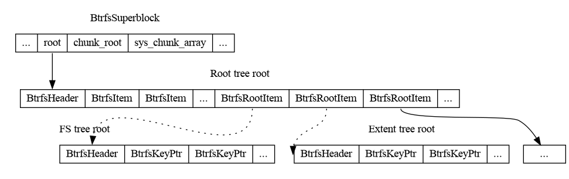

This is the fourth of a multipart series that explains the basics of btrfs’s on-disk format.
At the end of this series, we’ll have a program that can print out
the absolute path of every regular file in an unmounted btrfs filesystem
image without external libraries or ioctl(2) calls.
Example code is available here.
Part 3 went into detail on how to walk an on-disk B-tree given the logical address of a root node. However, not all tree roots are stored in the superblock. To access any tree that isn’t the chunk tree or the log tree, we must locate the relevant root using the root tree root.
The root tree root contains references to all the other trees:

The superblock contains the logical address for the root tree root
node. The root tree root is a leaf node that contains
BtrfsRootItems as payloads. The BtrfsRootItems
contain references to other tree roots. Note that the solid lines are
direct references insofar as the reference is a
BtrfsKeyPtr. The dashed line is a reference through other
means.
Note that the root tree may also contain other item types. They’re not particularly interesting for our tool so we’ll ignore them.
First, we read the root tree root. This should be fairly straightforward by now:
fn read_root_tree_root(
file: &File,
root_tree_root_logical: u64,
cache: &ChunkTreeCache,
) -> Result<Vec<u8>> {
let size = cache
.mapping_kv(root_tree_root_logical)
.ok_or_else(|| anyhow!("Root tree root logical addr not mapped"))?
.0
.size;
let physical = cache
.offset(root_tree_root_logical)
.ok_or_else(|| anyhow!("Root tree root logical addr not mapped"))?;
let mut root = vec![0; size as usize];
file.read_exact_at(&mut root, physical)?;
Ok(root)
}where root_tree_root_logical is available in
BtrfsSuperblock::root.
Now that we’ve got the root tree root, it’s time to extract the filesystem tree root from it.
First, let’s define BtrfsRootItem:
#[repr(C, packed)]
#[derive(Copy, Clone)]
pub struct BtrfsRootItem {
pub inode: BtrfsInodeItem,
pub generation: u64,
pub root_dirid: u64,
pub bytenr: u64,
pub byte_limit: u64,
pub bytes_used: u64,
pub last_snapshot: u64,
pub flags: u64,
pub refs: u32,
pub drop_progress: BtrfsKey,
pub drop_level: u8,
pub level: u8,
pub generation_v2: u64,
pub uuid: [u8; BTRFS_UUID_SIZE],
pub parent_uuid: [u8; BTRFS_UUID_SIZE],
pub received_uuid: [u8; BTRFS_UUID_SIZE],
/// updated when an inode changes
pub ctransid: u64,
/// trans when created
pub otransid: u64,
/// trans when sent. non-zero for received subvol
pub stransid: u64,
/// trans when received. non-zero for received subvol
pub rtransid: u64,
pub ctime: BtrfsTimespec,
pub otime: BtrfsTimespec,
pub stime: BtrfsTimespec,
pub rtime: BtrfsTimespec,
pub reserved: [u64; 8],
}To walk the root tree root, we can use the same algorithm as we used when we walked the chunk tree root. Note that this is the benefit of using the same B-tree data structure to store all btrfs data and metadata (reusable algorithms).
fn read_fs_tree_root(
file: &File,
superblock: &BtrfsSuperblock,
root_tree_root: &[u8],
cache: &ChunkTreeCache,
) -> Result<Vec<u8>> {
let header =
tree::parse_btrfs_header(root_tree_root)
.expect("failed to parse root tree root header");
if header.level != 0 {
bail!("Root tree root is not a leaf node");
}Extract the header and see if we’re at a leaf node. The root tree root must be a leaf node so bail if it’s not.
let items = tree::parse_btrfs_leaf(root_tree_root)?;
for item in items.iter().rev() {
if item.key.objectid != BTRFS_FS_TREE_OBJECTID
|| item.key.ty != BTRFS_ROOT_ITEM_KEY {
continue;
}Now, find the first (and only) BtrfsItem in the node
that’s the filesystem tree root.
let root_item = unsafe {
&*(root_tree_root
.as_ptr()
.add(std::mem::size_of::<BtrfsHeader>() + item.offset as usize)
as *const BtrfsRootItem)
};Once we have the &BtrfsItem, we want to extract the
payload. BtrfsItem::offset is the offset from the
end of the BtrfsHeader. The above code does the
math to pull out the BtrfsRootItem associated with the
current BtrfsItem.
let physical = cache
.offset(root_item.bytenr)
.ok_or_else(|| anyhow!("fs tree root not mapped"))?;
let mut node = vec![0; superblock.node_size as usize];
file.read_exact_at(&mut node, physical)?;
return Ok(node);
}Now read the filesystem tree root.
bail!("Failed to find root tree item for fs tree root");
}Finally, if the loop has finished and we haven’t returned yet, we return an error saying we couldn’t find the filesystem tree root. This should never happen for a proper btrfs image.
We’re almost done! We have the filesystem tree root. All that’s left is to walk the filesystem tree and make sense of the data we care about. In our case, we want the absolute path of every regular file. In the next post, we’ll finish off our project.